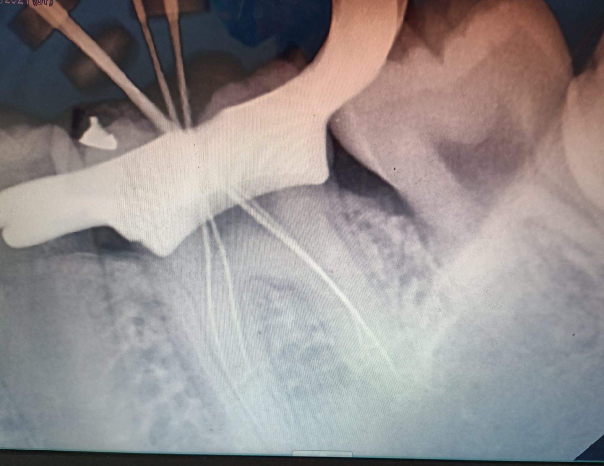
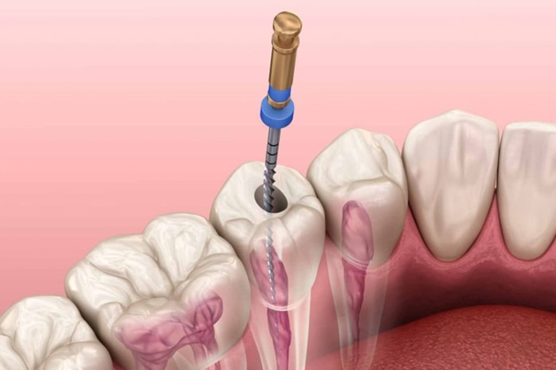
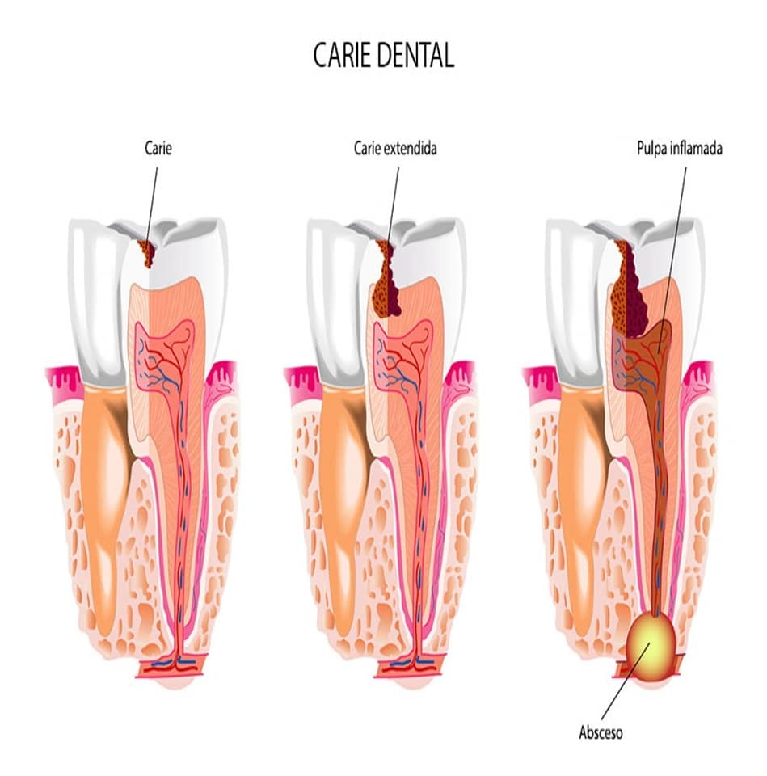

La profilaxis o limpieza dental se debe realizar cada 6 meses precisamente para evitar la gingivitis o inflamación de las encías, o una enfermedad periodontal causada por el cálculo sarro que se va formando entre los dientes o a nivel de los cuellos de los dientes, y otras debajo de la encía en la cual los pacientes no perciben ese cúmulo de sarro.
Radix Entomolaris El primer molar mandibular puede presentar diversas variaciones anatomicas. La mayoría de los primeros molares mandibulares caucásicos presentan dos raíces, con dos conductos mesiales y uno distal. La principal variación anatómica del primer molar mandibular es el Radix entomolaris, que se describe como un diente con una raíz adicional distolingual
Las Endodoncias se realizan en piezas dentales con caries profundas, que propician la inflamación o la necrosis (muerte) de la pulpa dental. Otros motivos para la aparición de pulpitis o inflamación de la pulpa son algunos traumatismos, la abrasión, la erosión y el desgaste de los dientes por el roce entre ellos (por ejemplo debido al bruxismo) o la forma en que se realizan algunos tratamientos restauradores y los materiales que se utilizan en los mismos. La endodoncia es, como hemos dicho, la extirpación total de la pulpa o nervio del diente. Se trata de un procedimiento de limpieza del sistema de conductos radiculares en el que se eliminan bacterias y tejido necrótico para dejar el conducto lo más aséptico posible.
Como se si necesito una endodoncia? Sintomas: Hipersensibilidad a los alimentos fríos y calientes, Dolor al masticar, Debido a un traumatismo caída o golpe, Caries profunda, Decoloración del Diente, Diente roto o astillado, Hinchazon de las encias en la zona adyacente al diente con caries. El principal objetivo de la endodoncia es evitar que haya que extraer la pieza dental y eliminar cualquier resto de infección para dejar el diente completamente sano.